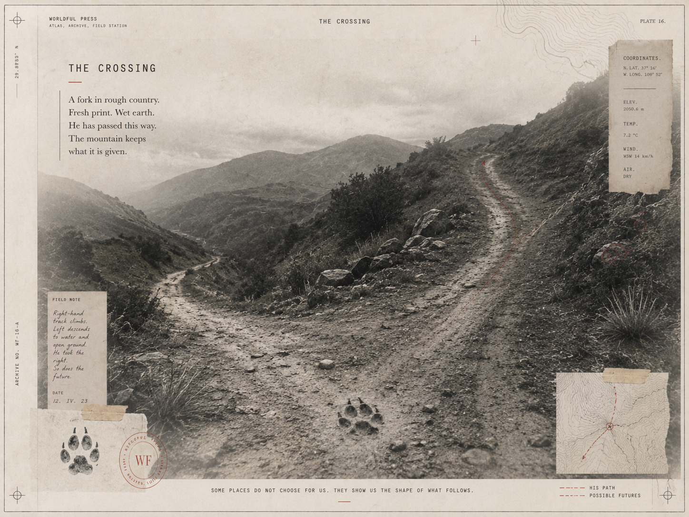

The Crossing
How Absent Things Learned to Move Living Bodies

Key Poses & Onion-Skin Inspection (`DRAW → LOOK → COMPARE → ADJUST`)
Click any keyframe below to scrub the multiplane camera directly to that story beat.


Director's Craft Notes (Picture · Sound · Code · Lineage)
Picture (Multiplane Staging)
A forked mountain pass in seven depth planes. A wolf leaves six wet commas in the mud and exits before the travellers arrive; on the fulcrum line, the camera pushes tight onto the muddy print as a red dashed trajectory climbs the right-hand scree.
Sound (Kokoro & Procedural Foley)
Mountain wind through switchgrass, heavy wolf paw squelches in wet earth, silence around the hunter's fulcrum warning, and a low archival bell when the child takes the high path.
Code (Structural Invariant)
source_absent + trace_present + interpreter -> altered_trajectory. Leaving things out is how description travels.
Lineage (Chapter Transition)
The foundational plate of the Atlas. Establishes the multiplane grammar: one absent cause, one physical trace, one fulcrum line that bends a body's path.
Exposure Sheet (X-Sheet) & Fulcrum Line Breakdown
| Frames / Time | Shot / Room | Dialogue & Kokoro Voice Performance (Click to Seek) | Foley Cues | Multiplane Camera Choreography | Planes |
|---|---|---|---|---|---|
| F0000–F0377 0.0s–15.7s |
ESTABLISH room: mountain |
Archivist (bf_emma): “A wolf crossed the ridge an hour before the child arrived. Its paws pressed six wet commas into the mud, and then the animal was gone.” [1.4s] The Child (bf_lily): “The valley path is level and clear. Why are we stopping?” [10.7s] |
step@0.8s, print@2.2s | Multiplane Lateral Truck (establish) | P0..P6 |
| F0377–F0478 15.7s–19.9s |
TITLE room: mountain |
(Visual Multiplane Hold & Surveyor Music Box Motif) |
ambient bed | Multiplane Lateral Truck (title) | P0..P6 |
| F0478–F0823 19.9s–34.3s |
ACTION room: mountain |
Archivist (bf_emma): “The older hunter crouched by the fork, touched the edge of the depression, and lifted two muddy fingers.” [21.2s] The Elder (bm_george): “The mud is still warm. Take the high path.” THE LINE [28.9s] |
crouch@0.6s, touch@2.4s | Push-In 1.28× + Fulcrum Vignette Hush (-8.5 dB) | P0..P6 |
| F0823–F1234 34.3s–51.4s |
FULCRUM_TURN room: mountain |
Archivist (bf_emma): “No fang, heat, or muscle crossed the air between them. Yet an animal no longer in the valley redirected a living body across the mountain.” [35.7s] Archivist (bf_emma): “If a message had to carry the whole wolf, you would need a cage, not a sentence.” THE LINE [45.5s] |
point@0.5s, climb@3.0s | Push-In 1.28× + Fulcrum Vignette Hush (-8.5 dB) | P0..P6 |
| F1234–F1579 51.4s–65.8s |
CONSEQUENCE room: study |
The Magistrate (bm_lewis): “We keep the wolf and drop the wind direction. We keep the danger and drop ten thousand blades of grass.” [52.7s] Archivist (bf_emma): “Leaving things out is how description travels.” THE LINE [61.7s] |
stamp@1.5s | Push-In 1.28× + Fulcrum Vignette Hush (-8.5 dB) | P0..P6 |
| F1579–F1675 65.8s–69.8s |
END room: mountain |
(Visual Multiplane Hold & Surveyor Music Box Motif) |
ambient bed | Multiplane Lateral Truck (end) | P0..P6 |
Multiplane Camera Depth Stack (`screen_motion ∝ camera_motion / layer_depth`)
| Plane | Depth | Layer Assignment | Differential Parallax Behavior |
|---|---|---|---|
| PLANE 0 | d = 0.00 | CAMERA MASK / ARCHIVAL PLATE FRAME | Fixed to lens (0.0x); double-ruled plate border, reticles, TRACE SPECIMEN, FIELD NOTE, WF stamp, & Fulcrum vignette |
| PLANE 1 | d = 0.72 | EXTREME FOREGROUND OCCLUSION | 1.39x camera motion; silhouetted switchgrass, timber posts, or stone pilasters crossing lens |
| PLANE 2 | d = 1.00 | PRIMARY CHARACTER ACTION | 1.00x camera motion; inside-out articulated characters, 24fps Kokoro lip-sync, & callout boxes |
| PLANE 3 | d = 1.25 | SECONDARY ACTION & PHYSICAL TRACES | 0.80x camera motion; chapter trace specimen, apparatus, & animated red dashed sightlines |
| PLANE 4 | d = 1.80 | MIDGROUND TERRAIN & ARCHITECTURE | 0.56x camera motion; stage-specific terrain, towers, alcoves, & cross-hatched ink slopes |
| PLANE 5 | d = 3.20 | DISTANT BACKGROUND & LITHOGRAPHIC PLATE | 0.31x camera motion; full-bleed archival plate atmosphere & distant mountain/vault horizon |
| PLANE 6 | d = 6.00 | SKY / CELESTIAL TOPOGRAPHY | 0.17x camera motion; warm archival parchment wash & surveyor contour rings |